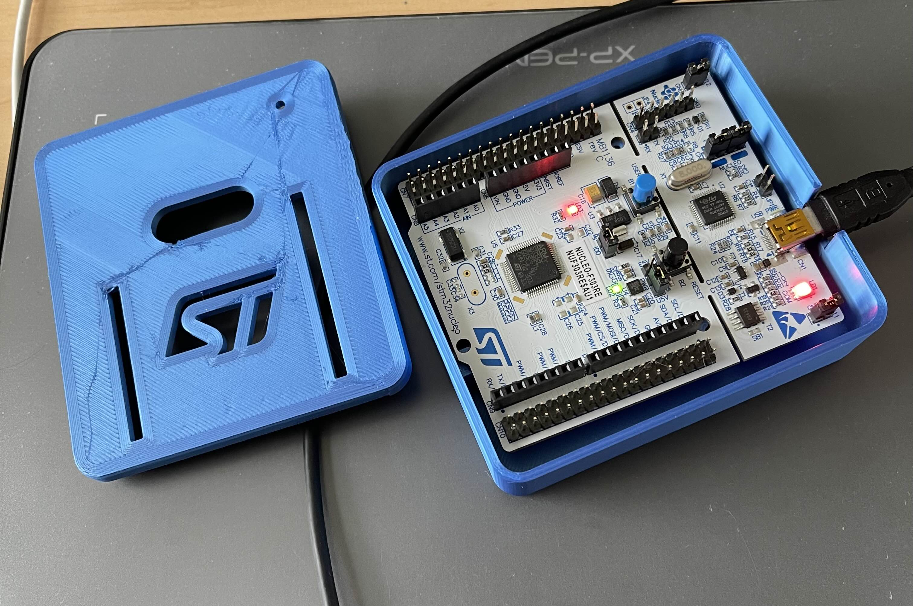

STM32 Bare-Metal Programming Progress
This page mainly serves to document any progress I make with the STM board that I bought. My goal is to learn how to do low-level register programming without the use of the IDE or the HAL. While this wouldn't be my first time doing register programming, this would be my first time doing everything from scratch (especially ARM-Cortex).

My STM32 board with a cute little 3D printed case.
November 11, 2024
At this point, I managed to set up my build environment and managed to flash a very simple blinking code onto the board. This part took a surprisingly long time to do, as I have been trying to do this on and off for a few weeks now. I bought this ST board because I believe that I have gotten far enough with my Atmel AVR board. ARM, while it looks a little more complicated, seems more interesting to me.
At first, I tried using Keil/ARM Studio, but after much toil, I realized they literally did not support the chip I was using (STM32F303RE). After that, I decided to give up on IDEs. I do have the STM32 Cube IDE, which works, but I really do not like it, so I avoid it if I can. It is useful for generation boilerplate code like the linker script, though. In the end, I stuch with the good ol Makefile to build and flash my stuff. I am using the ARM GCC compiler, and I flash the code using ST-LINK. Much of the necessary code for programming the registers was taken from the CMSIS repository by STM. It contains header files—defining all the registers so that I don't have to. I actually did all that pretty quickly, but for some reason, nothing was working. In turns out, there was also just a lot of boilerplate set up that needed to be done. Things like defining my own syscalls, handlers and set up functions were things that I did not think I'd need. I do want to say that I needed to use the STM Cube IDE because it auto-generated a linker script. Also, since I did not set up debugging yet, I might have to use the IDE if I want to debug (for now). I consolidated all this stuff into this repository: https://github.com/nathan-ha/stm32-bare-metal.